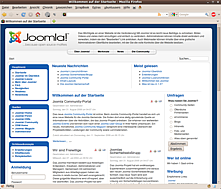
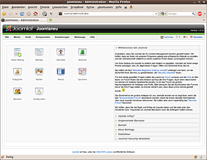

Joomla!
Dieser Artikel wurde für die folgenden Ubuntu-Versionen getestet:
Dieser Artikel ist größtenteils für alle Ubuntu-Versionen gültig.
Artikel für fortgeschrittene Anwender
Dieser Artikel erfordert mehr Erfahrung im Umgang mit Linux und ist daher nur für fortgeschrittene Benutzer gedacht.
Zum Verständnis dieses Artikels sind folgende Seiten hilfreich:
Joomla! ist ein populäres, kostenloses OpenSource Content Management System (CMS). Es ist in PHP geschrieben und nutzt MySQL als Datenbank. Es ist sehr einfach zu bedienen und bietet unzählige Erweiterungsmöglichkeiten.
Joomla! hatte in der Vergangenheit - wie andere Content Management Systeme oder Blogs auch - immer wieder Sicherheitslücken und ist daher bei manchen Webmastern trotz seiner weiten Verbreitung nicht gerade beliebt. Es gibt zahlreiche Alternativen zu Joomla!. Eine kleine Übersicht über verschiedene CMS findet in diesem Wiki-Artikel, eine ausführlichere auf opensourcecms.com  (wo man viele CMS auch live ausprobieren kann).
(wo man viele CMS auch live ausprobieren kann).
Versionen¶
Joomla! war in der Version 1.0.x nur eine Abwandlung (Fork) von Mambo , erst die im Januar 2008 erschienene Version 1.5 eine eigenständige Entwicklung. Anfang 2011 erschien die überarbeitete Version 1.6 mit erweitertem Rechtemanagement. Seit dieser Version ist Joomla! auf ein neues Versionen-System umgestiegen, welches ähnlich funktioniert wie das von Ubuntu: Es wird halbjährlich eine neue Version veröffentlicht. Alle 2 Jahre erscheint eine LTS-Version, welche für längere Zeit mit Updates versorgt wird. Die erste LTS-Version 2.5 erschien im Januar 2012, die STS Joomla! 3.0 im September 2012.
Versionen bis einschließlich 2.5 werden nicht mehr weiterentwickelt und erhalten inzwischen auch keine Sicherheitsupdates mehr.
Installation¶
Joomla! ist nicht in den offiziellen Paketquellen enthalten, aber dennoch einfach (manuell) zu installieren.

Voraussetzungen¶
Einzige Voraussetzung ist ein Webserver (bspw. Apache) mit geladenem PHP5-Modul sowie MySQL als Datenbank. Eine Schnellanleitung zur Installation ist dem Artikel LAMP zu entnehmen. Detail-Informationen finden sich im Wiki in den folgenden Artikeln.
Zusätzlich muss das Paket php7.0-xml installiert werden:
php7.0-xml
 mit apturl
mit apturl
Paketliste zum Kopieren:
sudo apt-get install php7.0-xml
sudo aptitude install php7.0-xml
Des Weiteren benötigt Joomla! für den Versand von E-Mails einen Mail Transfer Agent (MTA). Hierfür wird üblicherweise Postfix genutzt.
Achtung!
Es ist zwingend erforderlich, zuerst einen funktionierenden Webserver zu installieren.
Installieren¶
Joomla! gilt es nun erstmal herunterzuladen. Man kann Joomla! inklusive der deutschen Sprachpaketen von der Website der deutschen Übersetzungs-Community J!German  herunterladen. Alternativ steht die englische Original-Fassung auf der Joomla!-Projektseite zur Verfügung.
herunterladen. Alternativ steht die englische Original-Fassung auf der Joomla!-Projektseite zur Verfügung.
Nun muss man die heruntergeladene Datei entpacken. Der Webserver sucht im Verzeichnis /var/www/ bzw. /var/www/html (auch "document root" genannt) nach Webseiten. Daher muss Joomla! dorthin entpackt werden. Zusätzlich muss der Webserver in diesem Verzeichnis lesen und schreiben können. Die Rechte müssen daher noch richtig gesetzt werden. In einem Terminal [1] kann man dies über die Befehle durchführen:
sudo unzip -o DOWNLOAD-ORDNER/Joomla* -d /var/www/html/joomla sudo chown -R www-data:www-data /var/www/html/joomla
Einrichten¶

Joomla! ist nun entpackt und muss konfiguriert werden. Das Programm bringt einen Installations-Assistenten mit, mit dem die wichtigsten Einstellungen gemacht werden können. In einem Browser öffnet man dazu die Adresse http://SERVER-IP/joomla/installation/index.php (oder http://localhost/joomla/installation/index.php, falls man es auf dem eigenen Rechner nutzt) und folgt den Anweisungen.
Hinweis:
Wenn Firefox an dieser Stelle statt des Installations-Assistenten den Dialog "Öffnen mit..." anzeigt, hilft es oft, den Browsercache zu löschen. Beim Einsatz von Apache sollte man auch überprüfen, ob die Konfiguration korrekt durchgeführt wurde.
Datenbankkonfiguration¶
Bei der Datenbankkonfiguration müssen folgende Werte eingetragen werden, insofern die Datenbank auf dem selben Rechner wie der Webserver installiert ist. Sollte dies nicht der Fall sein, so muss unter "Hostname" der passende Rechner angegeben werden.
"Hostname":
localhost"MySQL user name":
root"MySQL password": Das MySQL-Passwort (bei XAMPP ist es leer, insofern man dies nicht geändert hat)
"MySQL database name": joomla
Die Datenbank wird automatisch angelegt, wenn sie nicht existiert. Falls Probleme auftreten, kann man eine Datenbank auch manuell einrichten. Besitzt man auf dem Datenbankserver keine Rechte zum Anlegen einer Datenbank, so muss man sich mit dem Administrator des Systems in Verbindung setzen.
Sonstige Konfigurationen¶
Des Weiteren sollte man unter "Your E-Mail" die E-Mail Adresse eintragen, unter der Joomla! administrative E-Mails verschicken soll. Das "Admin password" merken bzw. ändern. An den Dateirechten muss nichts geändert werden, diese wurden schon eingangs korrekt gesetzt.
Abschluss¶
Aufräumen¶
Letztendlich muss man das Installationsverzeichnis entfernen. Dazu einfach in einem Terminal [1] den Befehl
sudo rm -rf /var/www/joomla/installation
ausführen. Joomla! bietet jedoch nach Beendigung der Installation eine Schaltfläche, mit der man das Aufräumen automatisch erledigen lassen kann. Entfernt man das Verzeichnis nicht, so weigert sich Joomla! beim Aufruf der Webseite, das Portal anzuzeigen. Das Löschen ist also zwingende Voraussetzung zur Nutzung von Joomla!.
Konfiguration absichern¶
Die Grundkonfiguration von Joomla! steht in der Datei /var/www/joomla/configuration.php. Diese Datei sollte eigentlich nur dann vom Webserver schreibbar sein, wenn man aus Joomla! heraus wichtige Konfigurationen vornehmen will. Im normalen Betrieb darf diese Konfigurationsdatei nicht beschreibbar sein. Daher sollte man nach Abschluss der Konfiguration die Rechte mittels
sudo chmod -w /var/www/joomla/configuration.php
richtig setzen [1]. Joomla! selber bietet innerhalb des Administrations-Back-Ends diese Möglichkeit ebenfalls an. Um später wieder Konfigurationen vornehmen zu können, muss das Schreibrecht wieder gesetzt werden.
sudo chmod +w /var/www/joomla/configuration.php
Nach Abschluss der Konfiguration darf man nicht vergessen, das Schreibrecht (wieder) zu entziehen. Ansonsten lässt man eine Schwachstelle offen, über die Joomla! und letztlich der komplette Server kompromittiert werden könnte.
Joomla! aufrufen¶
Joomla! ist nun installiert und kann benutzt werden. Um Joomla! aufzurufen, muss man folgende Adressen in einem Webbrowser öffnen:
Portal:
http://SERVER-IP/joomlaAdministration:
http://SERVER-IP/joomla/administrator
Statt SERVER-IP kann je nach Installation auch der Name des Servers oder localhost verwendet werden. Zur eigentlichen Bedienung sei auf die umfangreiche Dokumentation zu Joomla! verwiesen.
Problembehebung¶
Updates einspielen¶
Da Sicherheitsaktualisierungen nicht automatisch eingespielt werden, muss man sich sich selbst um die Pflege einer bestehenden Installation kümmern. Um Joomla! zu aktualisieren, bietet die englische Homepage  spezielle Upgrade-Archivdateien an. Diese müssen heruntergeladen, entpackt und mit Root-Rechten in den Ordner /var/www/joomla/ kopiert werden. Vorher ist prinzipiell eine Datensicherung empfehlenswert, deren Durchführung in der offiziellen Dokumentation beschrieben wird.
spezielle Upgrade-Archivdateien an. Diese müssen heruntergeladen, entpackt und mit Root-Rechten in den Ordner /var/www/joomla/ kopiert werden. Vorher ist prinzipiell eine Datensicherung empfehlenswert, deren Durchführung in der offiziellen Dokumentation beschrieben wird.
XAMPP¶
Sofern man Joomla mit XAMPP betreiben möchte (unter Ubuntu nicht empfehlenswert), so muss man Joomla nicht in /var/www/, sondern nach /opt/lampp/htdocs/joomla installieren. Dies ist erforderlich, da XAMPP einen eigenen Installationsordner erwartet. Des Weiteren muss man die Zugriffsrechte entsprechend ändern, damit man Joomla! einwandfrei nutzen kann. Die Befehle dafür sind wie folgt:
sudo chown –R nobody:nogroup /opt/lampp/htdocs/joomla sudo chmod a+w /opt/lampp/htdocs/joomla
Mit diesen Änderungen sollte Joomla! auch unter XAMPP problemlos funktionieren.
Links¶
Joomla-Downloads
- Übersicht der wichtigsten Komponenten und Module für Einsteiger (ist offline)Dokumentation:
Was ist neu in Joomla 2.5?
- für FortgeschritteneJoomla! 2.5 - Ein Anfängerbuch
- kommerzielles Produkt, auch als Online-Version
- Erstellt mit Inyoka
-
 2004 – 2017 ubuntuusers.de • Einige Rechte vorbehalten
2004 – 2017 ubuntuusers.de • Einige Rechte vorbehalten
Lizenz • Kontakt • Datenschutz • Impressum • Serverstatus -
Serverhousing gespendet von